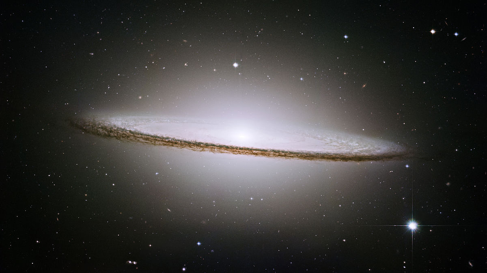
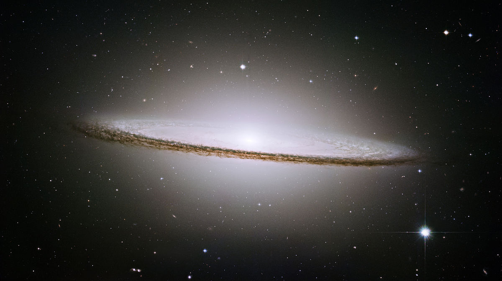

Help me, Obi-Wan Kenobi. You're my only hope. What's this? What is what?!? He asked you a question... What is that? Help me, Obi-Wan Kenobi. You're my only hope. Help me, Obi-Wan Kenobi. You're my only hope. Oh, he says it's nothing, sir. Merely a malfunction. Old data. Pay it no mind. Who is she? She's beautiful. I'm afraid I'm not quite sure, sir. Help me, Obi-Wan Kenobi... I think she was a passenger on our last voyage. A person of some importance, sir -- I believe. Our captain was attached to... Is there more to this recording? Behave yourself, Artoo. You're going to get us in trouble. It's all right, you can trust him. He's our new master...
There's nothing you could have done, Luke, had you been there. You'd have been killed, too, and the droids would be in the hands of the Empire. I want to come with you to Alderaan. There's nothing here for me now. I want to learn the ways of the Force and become a Jedi like my father. Mos Eisley Spaceport. You will never find a more wretched hive of scum and villainy. We must be cautious. How long have you had these droids? About three or four seasons. They're for sale if you want them.I hope the old man got that tractor beam out if commission, or this is going to be a real short trip. Okay, hit it! We're coming up on the sentry ships. Hold 'em off!
 
